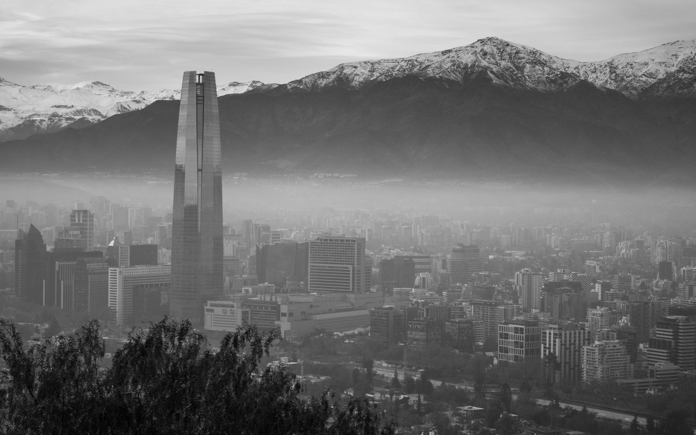
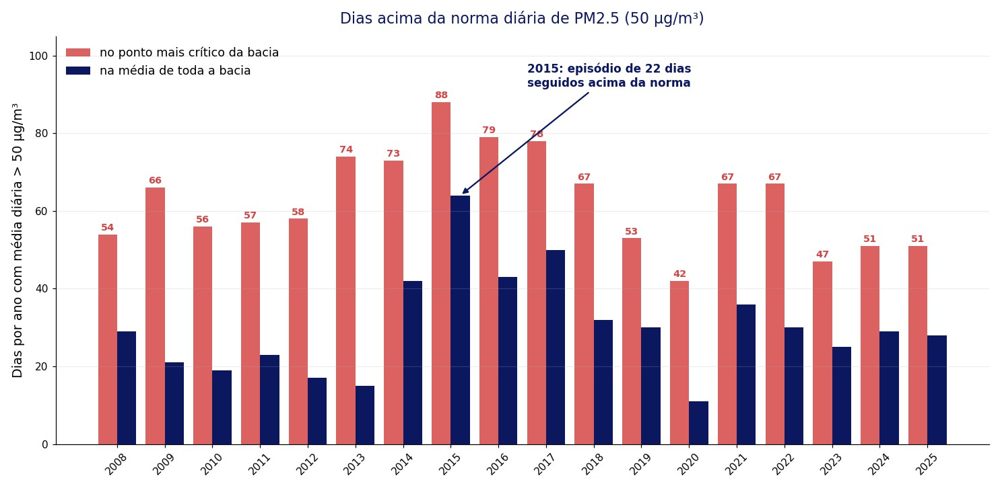
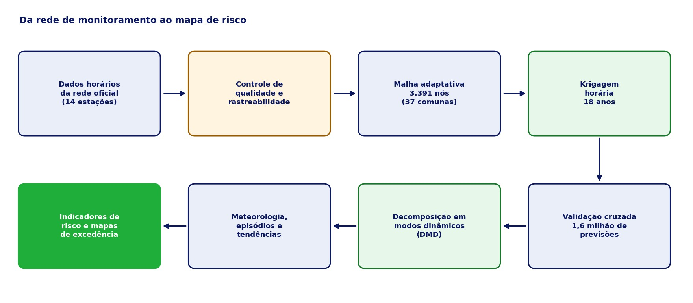
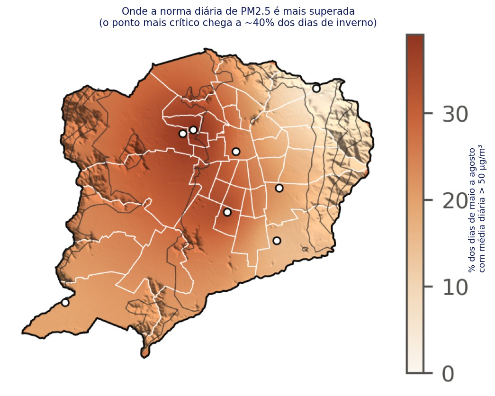
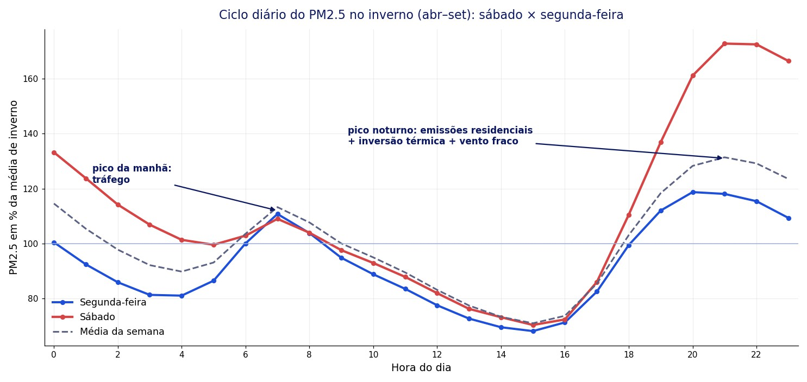
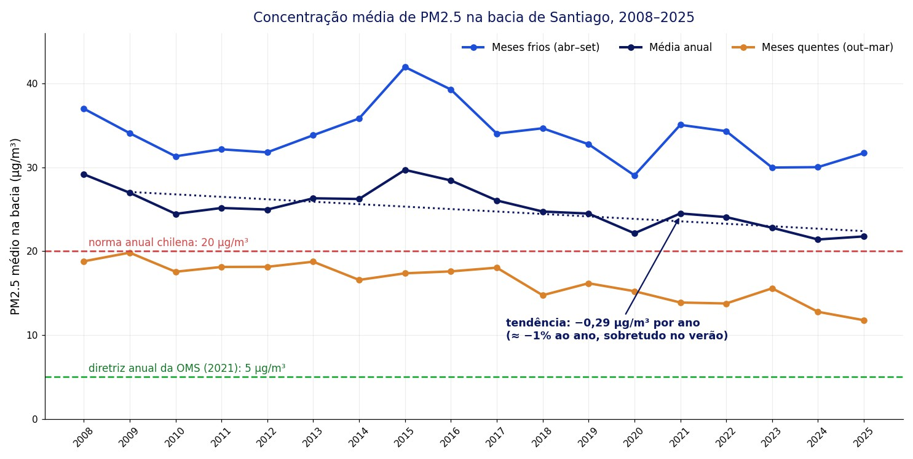

Problema / desafio do cliente
O material particulado fino (PM2.5) é o poluente atmosférico com maior impacto na saúde: penetra profundamente nos pulmões e está associado a doenças respiratórias e cardiovasculares. Santiago do Chile tem alguns dos maiores níveis de PM2.5 de inverno da América Latina.
A rede oficial de monitoramento é longa, mas esparsa: entre 8 e 11 estações medindo ao mesmo tempo em uma bacia de mais de 30 comunas. A pergunta era: como estimar a exposição em toda a bacia, hora a hora, e identificar onde, quando e por que a norma é superada?
Contexto e características do processo
- Bacia de Santiago (Região Metropolitana, Chile), cercada pela Cordilheira dos Andes e pela Cordilheira da Costa.
- No inverno, a subsidência atmosférica, as inversões térmicas e os ventos fracos limitam a dispersão e acumulam os poluentes perto do solo.
- Base de dados: PM2.5 horário de 14 estações da rede oficial (8 com medição em todo o período), de junho de 2008 a setembro de 2026: mais de 160.000 horas, além de temperatura, umidade e vento medidos localmente.
- Referências de risco: norma diária chilena de 50 µg/m³, norma anual de 20 µg/m³ e diretriz anual da OMS de 5 µg/m³.

Diagnóstico e dados analisados
- A concentração média anual na bacia variou de 21 a 30 µg/m³, sempre acima da norma anual chilena (20 µg/m³) e de 4 a 6 vezes a diretriz da OMS.
- Nos meses frios (abril a setembro) a média sobe para 29 a 42 µg/m³; nos meses quentes fica entre 12 e 20 µg/m³.
- Foram identificados 209 episódios críticos (dias seguidos com média da bacia acima de 50 µg/m³). A maioria dura 1 a 3 dias, mas o pior, em 2015, durou 22 dias consecutivos.
- 95% dos dias acima da norma ocorrem entre maio e agosto.

Metodologia utilizada
- Dados rastreáveis: download da rede oficial com verificação de integridade, controle de qualidade e eixo horário comum (nenhum dado apagado, apenas sinalizado).
- Domínio e malha: 37 comunas da bacia e malha adaptativa de 3.391 nós, com as estações como nós.
- Interpolação espacial por krigagem ordinária (e comparação com IDW e krigagem logarítmica) para reconstruir o campo de PM2.5 de cada hora.
- Validação retirando uma estação por vez, hora a hora: mais de 1,6 milhão de previsões comparadas com medições reais.
- Decomposição em modos dinâmicos (DMD), padrão e com atrasos temporais (Hankel-DMD), para separar os ciclos anual, semanal e diário e os padrões espaciais.
- Testes de robustez independentes do método (espectros, autocorrelação e propagação do erro da krigagem) para separar sinais físicos de artefatos.
- Meteorologia, episódios e tendências: correlações com vento, temperatura e umidade, composição de episódios e tendência de Theil–Sen.

Solução de engenharia desenvolvida
O resultado é um modelo espaço-temporal do PM2.5 para toda a bacia, com mapas horários validados, que permite:
- mapear a exposição em qualquer ponto da bacia, inclusive onde não há estação;
- identificar as zonas de maior risco: no oeste e no centro-norte da bacia a norma diária é superada em até 40% dos dias de inverno, contra cerca de 6% no setor leste, mais alto e ventilado;
- separar o que é causado pela meteorologia do que é causado pelos ritmos de emissão (tráfego, calefação residencial);
- dar base técnica a planos de gestão de episódios e de descontaminação.

Tecnologias e processos envolvidos
- Geoestatística: variograma, krigagem ordinária e logarítmica, IDW e validação cruzada.
- Decomposição em modos dinâmicos (DMD e Hankel-DMD) e análise espectral (Lomb–Scargle).
- Malha adaptativa com gmsh e dados geográficos oficiais das comunas.
- Python: NumPy, pandas, SciPy, GeoPandas e matplotlib, com pipeline numerado, testes automáticos e resultados reproduzíveis.
- Estatística de tendências (Theil–Sen, Mann–Kendall) e regressão robusta com dados meteorológicos.
Modelagem, simulação e ferramentas computacionais
A validação mostrou que a krigagem reduz em 26% o erro quadrático em relação à média simples da rede (erro médio de cerca de 12 µg/m³ por hora). O estudo também demonstrou que, com uma rede fixa de estações, a malha acrescenta representação espacial, mas não informação dinâmica nova: a dinâmica está nas estações.
A decomposição DMD mostrou que o PM2.5 se organiza em ciclos anual, semanal e diário (modos persistentes de 24 h e 12 h), sobre os quais se somam os episódios de vários dias. No inverno, o ciclo diário tem dois picos: um pela manhã, ligado ao tráfego, e um muito mais forte à noite, quando as emissões residenciais coincidem com a inversão térmica e o vento fraco.

O ciclo semanal não tem contrapartida meteorológica: temperatura, umidade e vento variam menos de 2% entre os dias da semana, mas os sábados de inverno ficam 23% acima das segundas-feiras mesmo depois de descontar a meteorologia. É um sinal claro de emissões humanas, sobre as quais é possível agir.
Resultados obtidos
- Mapas horários validados de PM2.5 para toda a bacia, em 18 anos.
- Identificação das zonas e horários de maior risco: oeste e centro-norte da bacia, noites de inverno, especialmente aos sábados.
- A meteorologia local explica cerca de um terço da variação diária no inverno, mas não as diferenças entre um inverno e outro.
- Tendência de queda de cerca de 0,3 µg/m³ por ano (≈ 1% ao ano), concentrada no verão; no inverno, quando o risco é maior, não há tendência significativa.
- Critérios técnicos para aplicar decomposições espaço-temporais a redes de monitoramento esparsas, evitando interpretar artefatos numéricos como sinais físicos.

CAPEX/OPEX e análise técnico-econômica
Quando aplicável: estimativas de CAPEX e OPEX, comparação entre alternativas, custo por m³ ou por tonelada, payback.
Escopo e responsabilidades da GETA
A GETA foi responsável por todo o estudo:
- obtenção, controle de qualidade e rastreabilidade dos dados da rede oficial;
- domínio geográfico, malha e interpolação espacial validada;
- decomposição em modos dinâmicos e testes de robustez;
- análise de meteorologia, episódios críticos e tendências;
- interpretação dos resultados em termos de exposição e risco ambiental.
Principais entregáveis
- Base de dados horária de PM2.5 tratada e rastreável (2008–2026).
- Mapas horários e diários de concentração em toda a bacia, com o erro de estimativa.
- Mapas de excedência da norma e indicadores de risco por zona e por horário.
- Análise de episódios críticos, ciclos semanal e diário e tendências de longo prazo.
- Pipeline em Python reproduzível, com testes automáticos, e relatório técnico.